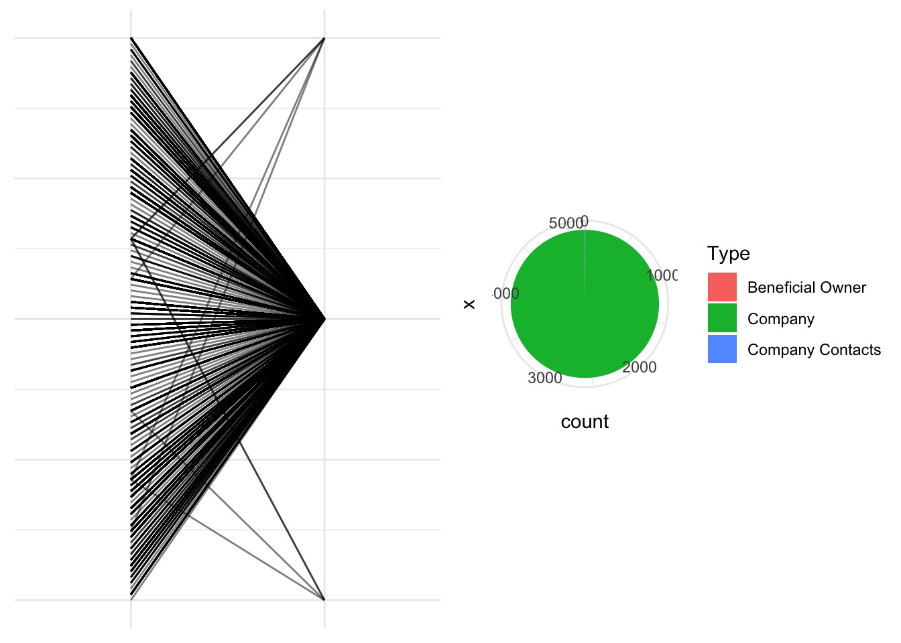
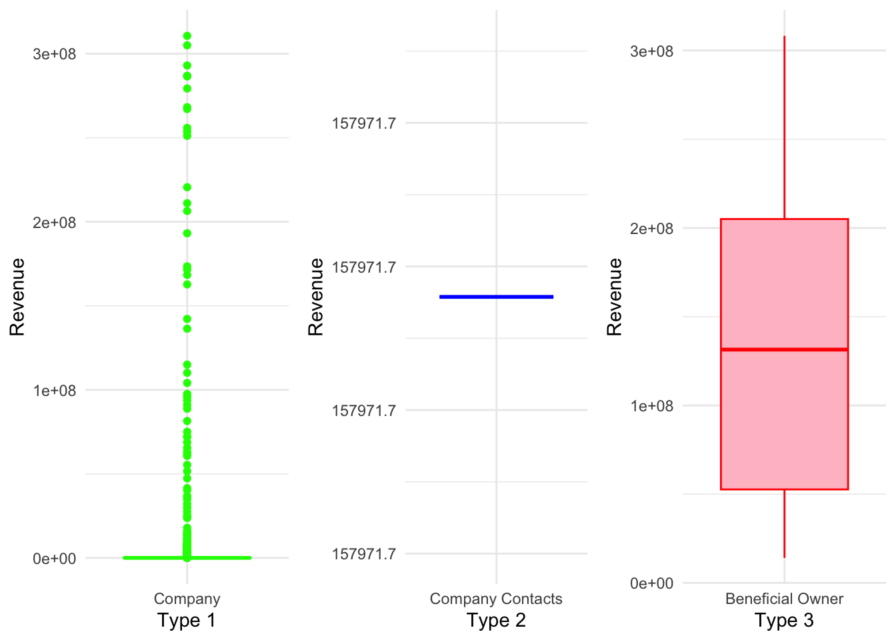
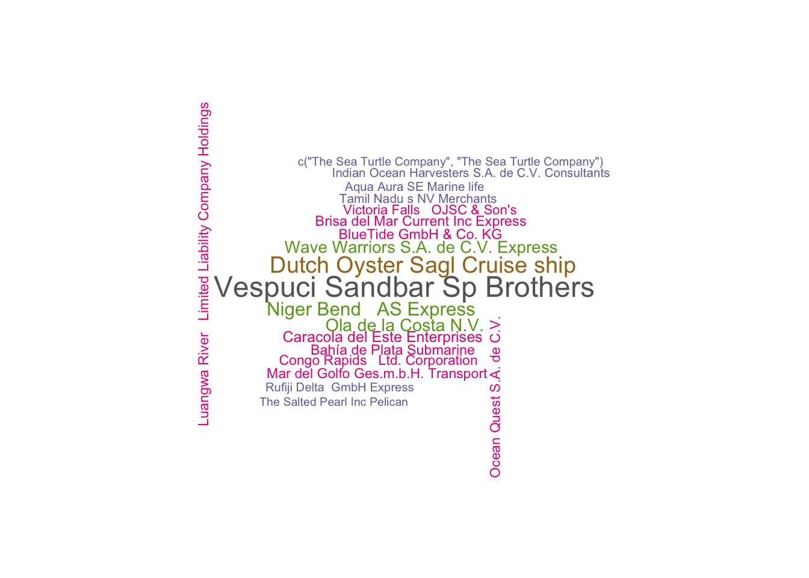
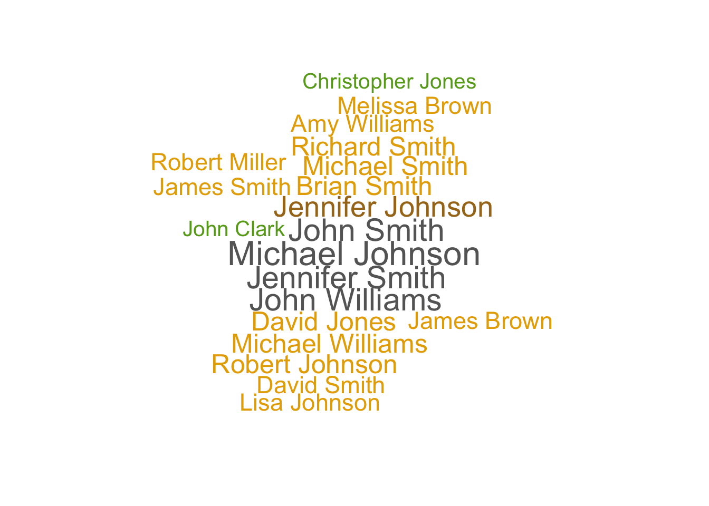
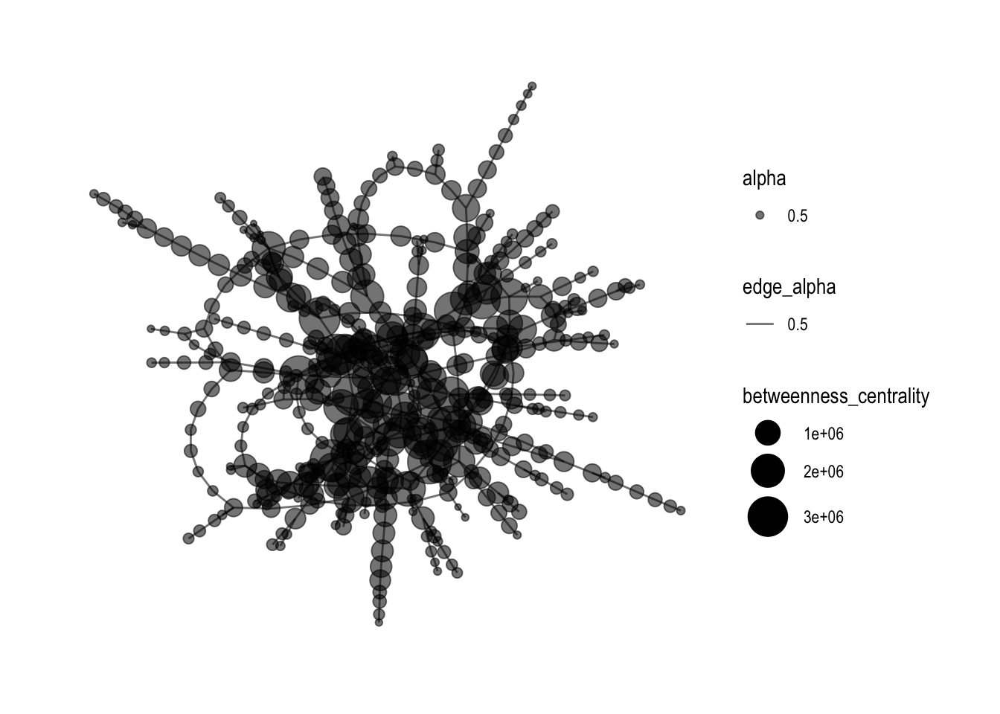
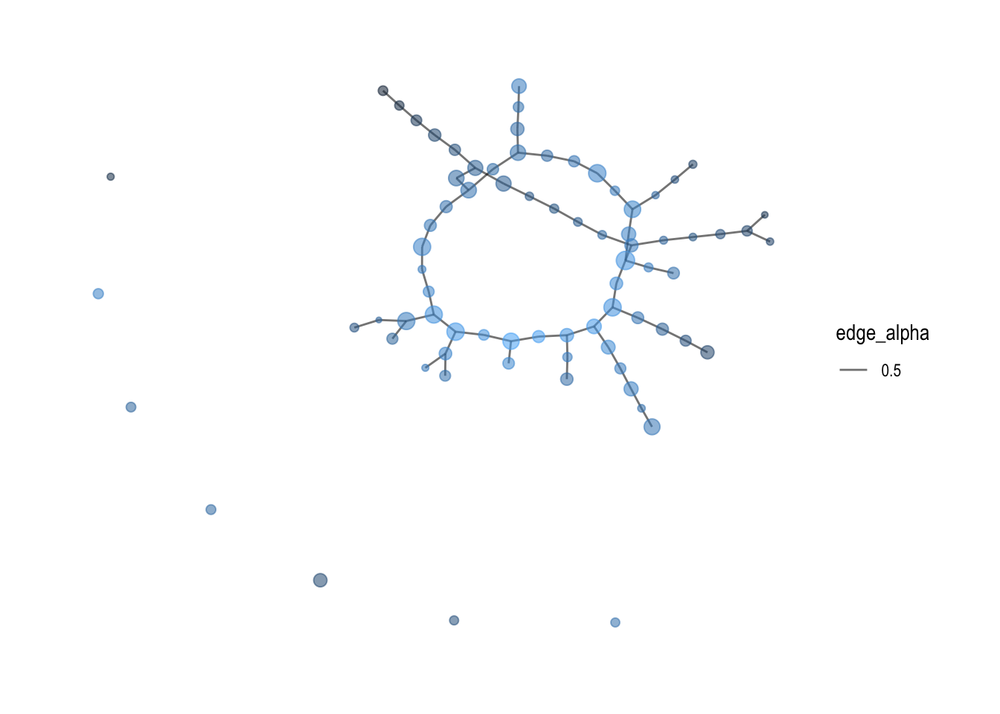
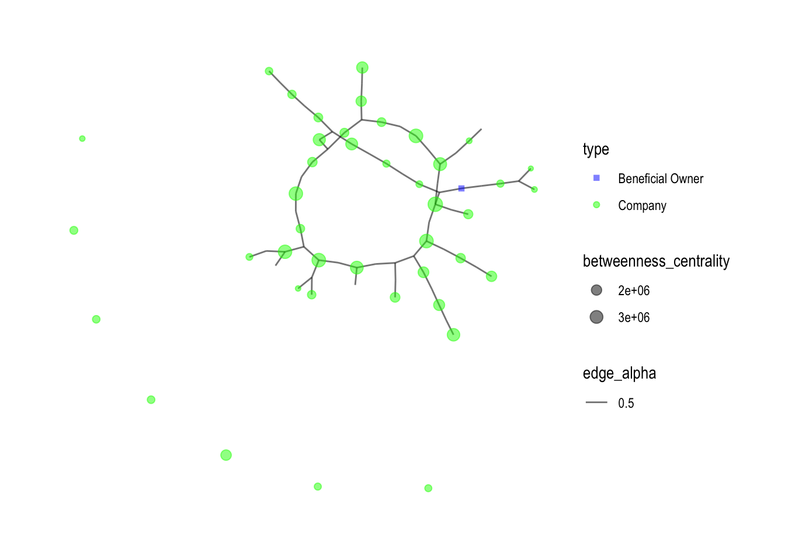
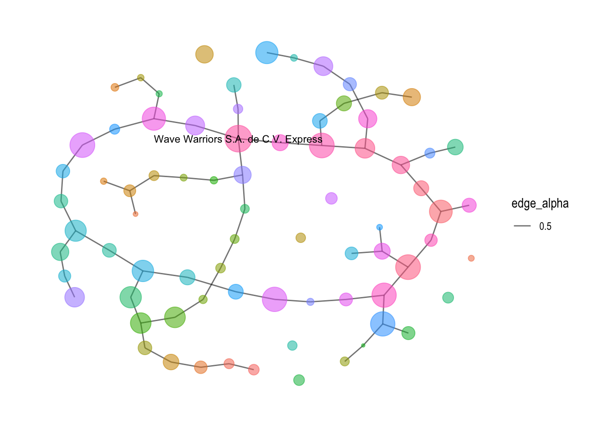

pacman::p_load(jsonlite, tidygraph, ggraph, GGally, wordcloud, visNetwork,
visNetwork, graphlayouts, ggforce, igraph, ggraph,
skimr, tidytext, tidyverse, gganimate, gridExtra)Take-home Exercise 3
Getting Started
The code chunk below will be used to install and load the necessary R packages to meet the data preparation, data wrangling, data analysis and visualisation needs.
Data Import
In the code chunk below, fromJSON() of jsonlite package is used to import MC3.json into R environment.
mc3_data <- fromJSON("data/MC3.json")The output is called mc3_data. It is a large list R object.
Data Wrangling
Extracting edges
The code chunk below will be used to extract the links data.frame of mc3_data and save it as a tibble data.frame called mc3_edges.
mc3_edges <- as_tibble(mc3_data$links) %>%
distinct() %>%
mutate(source = as.character(source),
target = as.character(target),
type = as.character(type)) %>%
group_by(source, target, type) %>%
summarise(weights = n()) %>%
filter(source!=target) %>%
ungroup()Extracting nodes
The code chunk below will be used to extract the nodes data.frame of mc3_data and save it as a tibble data.frame called mc3_nodes.
mc3_nodes <- as_tibble(mc3_data$nodes) %>%
mutate(country = as.character(country),
id = as.character(id),
product_services = as.character(product_services),
revenue_omu = as.numeric(as.character(revenue_omu)),
type = as.character(type)) %>%
select(id, country, type, revenue_omu, product_services)Initial Data Exploration
Exploring the edges data
In the code chunk below, skim() of skimr package is used to display the summary statistics of mc3_edges tibble data frame.
skim(mc3_edges)| Name | mc3_edges |
| Number of rows | 24036 |
| Number of columns | 4 |
| _______________________ | |
| Column type frequency: | |
| character | 3 |
| numeric | 1 |
| ________________________ | |
| Group variables | None |
Variable type: character
| skim_variable | n_missing | complete_rate | min | max | empty | n_unique | whitespace |
|---|---|---|---|---|---|---|---|
| source | 0 | 1 | 6 | 700 | 0 | 12856 | 0 |
| target | 0 | 1 | 6 | 28 | 0 | 21265 | 0 |
| type | 0 | 1 | 16 | 16 | 0 | 2 | 0 |
Variable type: numeric
| skim_variable | n_missing | complete_rate | mean | sd | p0 | p25 | p50 | p75 | p100 | hist |
|---|---|---|---|---|---|---|---|---|---|---|
| weights | 0 | 1 | 1 | 0 | 1 | 1 | 1 | 1 | 1 | ▁▁▇▁▁ |
The report above reveals that there is not missing values in all fields.
In the code chunk below, glimpse() of DT package is used to display mc3_edges.
glimpse(mc3_edges)Rows: 24,036
Columns: 4
$ source <chr> "1 AS Marine sanctuary", "1 AS Marine sanctuary", "1 Ltd. Liab…
$ target <chr> "Christina Taylor", "Debbie Sanders", "Angela Smith", "Catheri…
$ type <chr> "Company Contacts", "Beneficial Owner", "Beneficial Owner", "C…
$ weights <int> 1, 1, 1, 1, 1, 1, 1, 1, 1, 1, 1, 1, 1, 1, 1, 1, 1, 1, 1, 1, 1,…ggplot(data = mc3_edges,
aes(x = type)) +
geom_bar()Exploring the nodes data
In the code chunk below, skim() of skimr package is used to display the summary statistics of mc3_nodes tibble data frame.
skim(mc3_nodes)| Name | mc3_nodes |
| Number of rows | 27622 |
| Number of columns | 5 |
| _______________________ | |
| Column type frequency: | |
| character | 4 |
| numeric | 1 |
| ________________________ | |
| Group variables | None |
Variable type: character
| skim_variable | n_missing | complete_rate | min | max | empty | n_unique | whitespace |
|---|---|---|---|---|---|---|---|
| id | 0 | 1 | 6 | 64 | 0 | 22929 | 0 |
| country | 0 | 1 | 2 | 15 | 0 | 100 | 0 |
| type | 0 | 1 | 7 | 16 | 0 | 3 | 0 |
| product_services | 0 | 1 | 4 | 1737 | 0 | 3244 | 0 |
Variable type: numeric
| skim_variable | n_missing | complete_rate | mean | sd | p0 | p25 | p50 | p75 | p100 | hist |
|---|---|---|---|---|---|---|---|---|---|---|
| revenue_omu | 21515 | 0.22 | 1822155 | 18184433 | 3652.23 | 7676.36 | 16210.68 | 48327.66 | 310612303 | ▇▁▁▁▁ |
glimpse(mc3_nodes)Rows: 27,622
Columns: 5
$ id <chr> "Jones LLC", "Coleman, Hall and Lopez", "Aqua Advance…
$ country <chr> "ZH", "ZH", "Oceanus", "Utoporiana", "ZH", "ZH", "Rio…
$ type <chr> "Company", "Company", "Company", "Company", "Company"…
$ revenue_omu <dbl> 310612303, 162734684, 115004667, 90986413, 81466667, …
$ product_services <chr> "Automobiles", "Passenger cars, trucks, vans, and bus…ggplot(data = mc3_nodes,
aes(x = type)) +
geom_bar()# Create a subset of data with 'country' and 'type' variables, excluding 'ZH' entries
subset_data <- mc3_nodes[mc3_nodes$country != "ZH", c("country", "type")]
# Create the parallel coordinates plot with modified parameters
parallel_plot <- ggparcoord(data = subset_data,
scale = "uniminmax",
alphaLines = 0.5) +
theme_minimal() +
theme(axis.title.x = element_blank(),
axis.text.x = element_blank(),
axis.ticks.x = element_blank()) +
theme(plot.background = element_blank(),
panel.background = element_blank(),
axis.title.y = element_blank(),
axis.text.y = element_blank(),
axis.ticks.y = element_blank()) +
ylab("Type")
# Create the pie chart
pie_chart <- ggplot(subset_data, aes(x = "", fill = type)) +
geom_bar(width = 1) +
coord_polar("y", start = 0) +
labs(fill = "Type") +
theme_minimal()
# Arrange the plots side by side
plots <- grid.arrange(parallel_plot, pie_chart, nrow = 1)
# Display the plots
print(plots)TableGrob (1 x 2) "arrange": 2 grobs
z cells name grob
1 1 (1-1,1-1) arrange gtable[layout]
2 2 (1-1,2-2) arrange gtable[layout]
The analysis revealed that the majority of the entries in the dataset are classified as “Company Type,” while only a few entries are categorized as “Company Contacts” and “Beneficial Owner.”
# Subset the data for each type
type1_data <- subset(mc3_nodes, type == "Company")
type2_data <- subset(mc3_nodes, type == "Company Contacts")
type3_data <- subset(mc3_nodes, type == "Beneficial Owner")
# Create the boxplots for each type
boxplot1 <- ggplot(type1_data, aes(x = type, y = revenue_omu)) +
geom_boxplot(fill = "lightgreen", color = "green") +
labs(x = "Type 1", y = "Revenue") +
theme_minimal()
boxplot2 <- ggplot(type2_data, aes(x = type, y = revenue_omu)) +
geom_boxplot(fill = "lightblue", color = "blue") +
labs(x = "Type 2", y = "Revenue") +
theme_minimal()
boxplot3 <- ggplot(type3_data, aes(x = type, y = revenue_omu)) +
geom_boxplot(fill = "pink", color = "red") +
labs(x = "Type 3", y = "Revenue") +
theme_minimal()
# Arrange the boxplots side by side
grid.arrange(boxplot1, boxplot2, boxplot3, ncol = 3)
Further exploration of the revenue distribution across different categories revealed interesting patterns. In the “Company” category, there are numerous outliers with significantly higher revenue values, causing the box to appear compressed near the lower end of the scale. On the other hand, the “Company Contacts” category shows a single observation with a revenue value of 157,971, indicating limited variability. Lastly, the “Beneficial Owner” category exhibits a relatively larger range, with a boxplot showing revenue values ranging from 0.5e+08 to 2e+08.
Initial Text Visualisation and Analysis
The code below generates a word cloud visualizing the frequencies of the top 20 words extracted from the ‘source’ and ‘target’ variable in the ‘mc3_edges’ dataset, with larger and bolder words representing higher frequencies.
# Generate word frequencies
source_freq <- table(mc3_edges$source)
# Sort word frequencies in descending order
sorted_source_freq <- sort(source_freq, decreasing = TRUE)
# Select the top 20 words by frequency
top_source_words <- names(sorted_source_freq)[1:20]
top_source_freq <- sorted_source_freq[1:20]
# Create word cloud with top 20 words
wordcloud(top_source_words, freq = top_source_freq, scale = c(1.5, 0.2), random.order = FALSE, colors = brewer.pal(8, "Dark2"))
# Generate word frequencies
target_freq <- table(mc3_edges$target)
# Sort word frequencies in descending order
sorted_target_freq <- sort(target_freq, decreasing = TRUE)
# Select the top 20 words by frequency
top_target_words <- names(sorted_target_freq)[1:20]
top_target_freq <- sorted_target_freq[1:20]
# Create word cloud with top 20 words
wordcloud(top_target_words, freq = top_target_freq, scale = c(2, 0.4), random.order = FALSE, colors = brewer.pal(8, "Dark2"))
Text Sensing with tidytext
In this section, you will learn how to perform basic text sensing using appropriate functions of tidytext package.
Simple word count
The code chunk below calculates number of times the word fish appeared in the field product_services.
mc3_nodes %>%
mutate(n_fish = str_count(product_services, "fish")) # A tibble: 27,622 × 6
id country type revenue_omu product_services n_fish
<chr> <chr> <chr> <dbl> <chr> <int>
1 Jones LLC ZH Comp… 310612303. Automobiles 0
2 Coleman, Hall and Lopez ZH Comp… 162734684. Passenger cars,… 0
3 Aqua Advancements Sashimi … Oceanus Comp… 115004667. Holding firm wh… 0
4 Makumba Ltd. Liability Co Utopor… Comp… 90986413. Car service, ca… 0
5 Taylor, Taylor and Farrell ZH Comp… 81466667. Fully electric … 0
6 Harmon, Edwards and Bates ZH Comp… 75070435. Discount superm… 0
7 Punjab s Marine conservati… Riodel… Comp… 72167572. Beef, pork, chi… 0
8 Assam Limited Liability … Utopor… Comp… 72162317. Power and Gas s… 0
9 Ianira Starfish Sagl Import Rio Is… Comp… 68832979. Light commercia… 0
10 Moran, Lewis and Jimenez ZH Comp… 65592906. Automobiles, tr… 0
# ℹ 27,612 more rowsTokenisation
The word tokenisation have different meaning in different scientific domains. In text sensing, tokenisation is the process of breaking up a given text into units called tokens. Tokens can be individual words, phrases or even whole sentences. In the process of tokenisation, some characters like punctuation marks may be discarded. The tokens usually become the input for the processes like parsing and text mining.
In the code chunk below, unnest_token() of tidytext is used to split text in product_services field into words.
token_nodes <- mc3_nodes %>%
unnest_tokens(word,
product_services)The two basic arguments to unnest_tokens() used here are column names. First we have the output column name that will be created as the text is unnested into it (word, in this case), and then the input column that the text comes from (product_services, in this case).
Now we can visualise the words extracted by using the code chunk below.
token_nodes %>%
count(word, sort = TRUE) %>%
top_n(15) %>%
mutate(word = reorder(word, n)) %>%
ggplot(aes(x = word, y = n)) +
geom_col() +
xlab(NULL) +
coord_flip() +
labs(x = "Count",
y = "Unique words",
title = "Count of unique words found in product_services field")The bar chart reveals that the unique words contains some words that may not be useful to use. For instance “a” and “to”. In the word of text mining we call those words stop words. You want to remove these words from your analysis as they are fillers used to compose a sentence.
Removing stopwords
Lucky for use, the tidytext package has a function called stop_words that will help us clean up stop words.
Let’s give this a try next!
stopwords_removed <- token_nodes %>%
anti_join(stop_words)Now we can visualise the words extracted by using the code chunk below.
stopwords_removed %>%
count(word, sort = TRUE) %>%
top_n(15) %>%
mutate(word = reorder(word, n)) %>%
ggplot(aes(x = word, y = n)) +
geom_col() +
xlab(NULL) +
coord_flip() +
labs(x = "Count",
y = "Unique words",
title = "Count of unique words found in product_services field")Initial Network Visulization on Edges
Building network model with tidygraph
id1 <- mc3_edges %>%
select(source) %>%
rename(id = source)
id2 <- mc3_edges %>%
select(target) %>%
rename(id = target)
mc3_nodes1 <- rbind(id1, id2) %>%
distinct() %>%
left_join(mc3_nodes,
unmatched = "drop")mc3_graph <- tbl_graph(nodes = mc3_nodes1,
edges = mc3_edges,
directed = FALSE) %>%
mutate(betweenness_centrality = centrality_betweenness(),
closeness_centrality = centrality_closeness())mc3_graph %>%
filter(betweenness_centrality >= 100000) %>%
ggraph(layout = "fr") +
geom_edge_link(aes(alpha=0.5)) +
geom_node_point(aes(
size = betweenness_centrality,
colors = "lightblue",
alpha = 0.5)) +
scale_size_continuous(range=c(1,10))+
theme_graph()
Adding Features
With the original graph not clear enough, it is good to add in color and change the layout format of the Network graph, and most importantly, increase the betweenness centrality.
mc3_graph %>%
filter(betweenness_centrality >= 1000000) %>%
ggraph(layout = "kk") +
geom_edge_link(aes(alpha=0.5)) +
geom_node_point(aes(
size = betweenness_centrality,
color = closeness_centrality, alpha = 0.5), show.legend = FALSE) +
scale_size_continuous(range=c(1,4)) + # Add the plot title
theme_graph()
By adding shapes and colors for different variables in the graph, it shows a better visualization of how the network graphs links each entries in the dataset.
mc3_graph %>%
filter(betweenness_centrality >= 1000000) %>%
ggraph(layout = "kk") +
geom_edge_link(aes(alpha = 0.5)) +
geom_node_point(aes(
size = betweenness_centrality,
color = type,
shape = type), # Add the shape aesthetic
alpha = 0.5) +
scale_size_continuous(range = c(1, 4)) +
scale_color_manual(values = c("Company Contacts" = "red", "Beneficial Owner" = "blue", "Company" = "green")) +
scale_shape_manual(values = c("Company Contacts" = "triangle", "Beneficial Owner" = "square", "Company" = "circle")) + # Add the shape values
theme_graph()
Network Visulization of nodes with more than 3 edges
Below network graph labels the nodes with more than 3 edges, which there is only 1, the “Wave Warriors S.A. de C.V. Express”
mc3_graph <- tbl_graph(nodes = mc3_nodes1,
edges = mc3_edges,
directed = FALSE) %>%
mutate(betweenness_centrality = centrality_betweenness(),
closeness_centrality = as.factor(centrality_closeness())) %>%
filter(betweenness_centrality >= 1000000)
# Calculate the degrees of each node
degrees <- degree(mc3_graph)
set.seed (1234)
mc3_graph %>%
ggraph(layout = "fr") +
geom_edge_link(aes(alpha = 0.5)) +
geom_node_point(aes(size = betweenness_centrality,
color = closeness_centrality,
alpha = 0.5), show.legend = FALSE) +
geom_node_text(aes(label = ifelse(degrees > 3, as.character(id), "")), size = 3) + # Add node labels
scale_size_continuous(range = c(1, 10)) +
theme_graph()
Conclusion and Insights
Through the use of various visualizations, including parallel coordinates plots, pie charts, boxplots, word clouds, and network visualizations, a comprehensive understanding of the dataset was achieved. The process facilitated the exploration of business characteristics, patterns, and relationships, providing valuable insights for further analysis.
Insights:
Business Type Differentiation: The analysis revealed distinct business types within the dataset, such as companies, company contacts, and beneficial owners. Each type exhibited unique characteristics, including revenue distribution, frequency of occurrence, and network connections. This differentiation provides a valuable understanding of the diverse business landscape.
Revenue Variations: The boxplots showcasing revenue distribution for each business type highlighted variations among them. Companies exhibited a wide range of revenue values, including outliers with significant revenue levels. In contrast, company contacts had a single observation with a relatively high revenue, indicating a distinct category. Beneficial owners showed a narrower range of revenue values, suggesting a more focused revenue distribution.
Word Frequencies: The word cloud analysis unveiled frequently occurring words associated with businesses. These words can serve as indicators of common themes, activities, or characteristics prevalent among the businesses. Identifying such keywords can aid in understanding the business landscape and identifying key trends.
Business Networks: The network visualization and community detection algorithm provided insights into the interconnectedness of businesses. The presence of communities or clusters within the network indicated groups of similar businesses. Exploring these groups can unveil hidden relationships, potential collaborations, or shared characteristics among businesses.
Additionally, a specific analysis was conducted on nodes with more than 2 edges, revealing interesting findings. Among the more than 20 companies identified, only one business, “Wave Warriors S.A. de C.V. Express,” had more than 3 edges. This observation highlights the uniqueness and potentially influential role of this particular business within the network. Further examination of its connections and relationships can provide valuable insights into its significance and potential opportunities for collaboration or partnerships.
In conclusion, the visual analytics process provided a powerful means to identify similar businesses and group them based on their most important features. The process yielded valuable insights into business differentiation, revenue variations, network relationships, and common themes. These insights can assist decision makers in understanding the business landscape, identifying potential opportunities, and making informed strategic choices.